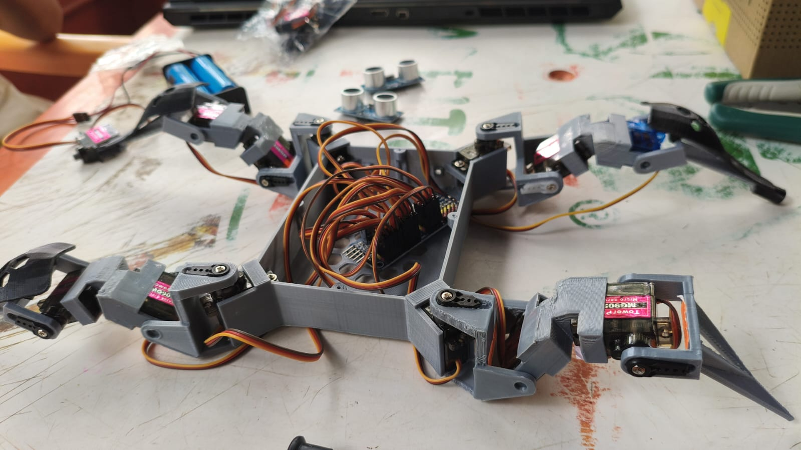

Galería del Proyecto

Estructura Impresa
Chasis reforzado con diseño hexagonal.

Control de Potencia
Manejo de 12 servos MG90S con PCA9685.
Esquemático
Conexiones I2C y sistema de alimentación dual.
Robot cuadrúpedo de alta precisión basado en ESP32, diseñado para exploración y cinemática avanzada. esta es una descripción breve del proyecto, destacando su innovación y características técnicas. Con un diseño robusto y modular, este robot es capaz de adaptarse a diversos terrenos y tareas, demostrando la versatilidad de la ING.mecatrónica y ING.sistemas aplicada al mundo real.

Chasis reforzado con diseño hexagonal.
Manejo de 12 servos MG90S con PCA9685.
Conexiones I2C y sistema de alimentación dual.